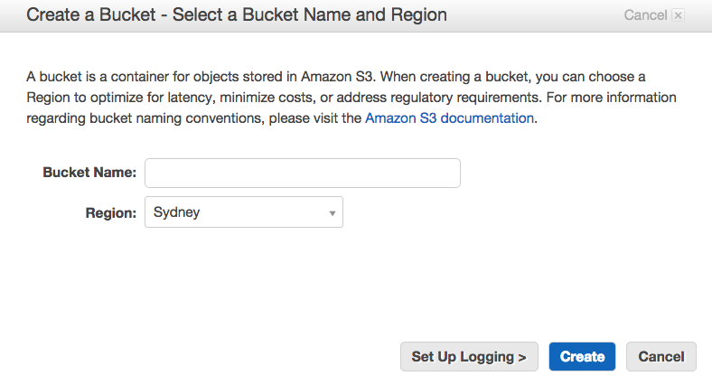
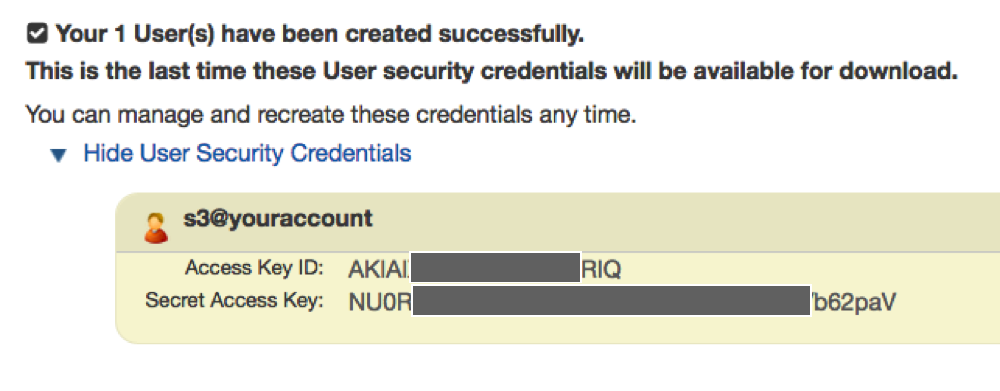
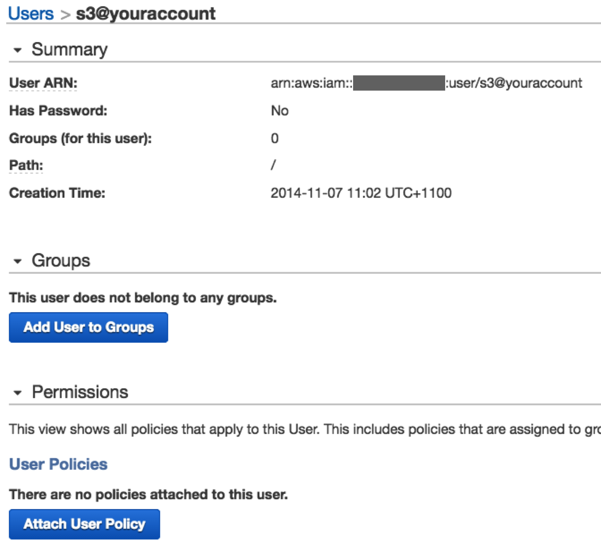
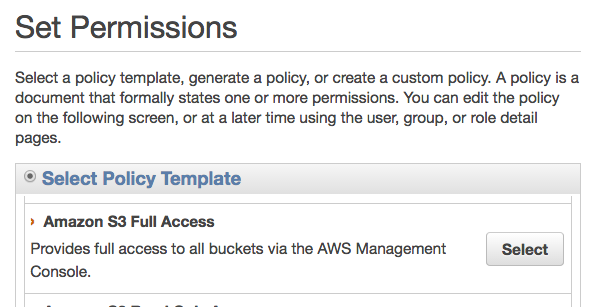

| 1 |
Set up your AWS account |
Find out about S3 and sign up. |
| 2 |
Set up your bucket |
A bucket is like a hard drive partition that will hold all your folders and files.

Creating a bucket instructions
Once the bucket has been created; navigate to it and under its Details section record its ARN.
|
| 3 |
Use IAM to create a user and access key |
You will need to set up a user and Access Key so that ibCom support can copy files to your S3 bucket.
You need to record the Access key as per the image below, which shown after the user is created.

|
| 4 |
Give the user permissions to S3 and your bucket |
Navigate to the user details and click Attach User Policy.

Then select Amazon S3 Full Access or set up a policy as best fits your needs.

|
| 5 |
Finishing up |
You now need to send the following to ibCom;
- S3 Bucket ARN
- User Access Key ID & Secret Access Key
|
| 6 |
Accessing files |
Once the files have been transferred to your bucket, you can use a number of standard AWS or 3rd party supplied tools - we have listed some in the sidebar. |